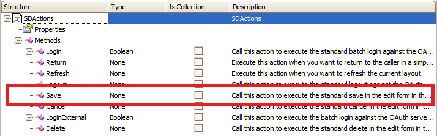
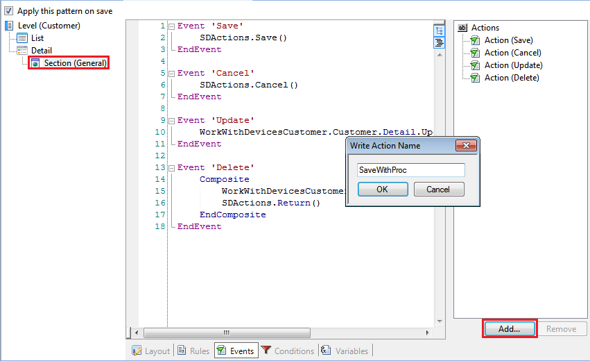
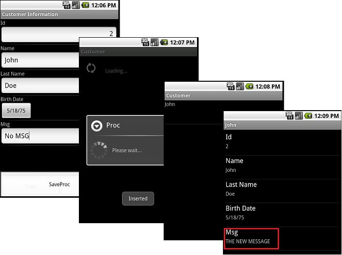

HowTo: Using Save Method from Actions for Smart Devices
Many times after saving a register of a Transaction you need to do something else. Call another Transaction, call an Entry Panel, a Procedure object, return to the List node, etc. So using the save action allows you to add more behavior to your application.
In this article you will see one example of the previously mentioned.
You want to call a Procedure after inserting a register into your application.
Consider the following Transaction:

As seen on the SmartDevicesApi folder the Save method doesn’t expect any parameter:

The behavior in this example is to Save a new register and after that invoke a Procedure which is going to change some part of the register.
In order to do this you have to do the following Procedure:
Procedure source:
ForEach
CustomerMsg = "THE NEW MESSAGE"
EndFor
Procedure rules:
Parm(CustomerId);
Now you have all the elements needed to do the example.
Start doing a new Action called "SaveWithProc".

By double-clicking over the new Action it will take you to the event associated.
As you want to Save and call a Procedure you have to do a composite action:
Event 'SaveWithProc'
Composite
Actions.Save()
Proc.Call(CustomerId)
EndComposite
EndEvent
Add the new save action to the Application Bar on the Edit mode in Section General.
Examples
Android

| Backlinks | |
| Actions external object | HowTo: Using the Cancel Method from Actions for Smart Devices |